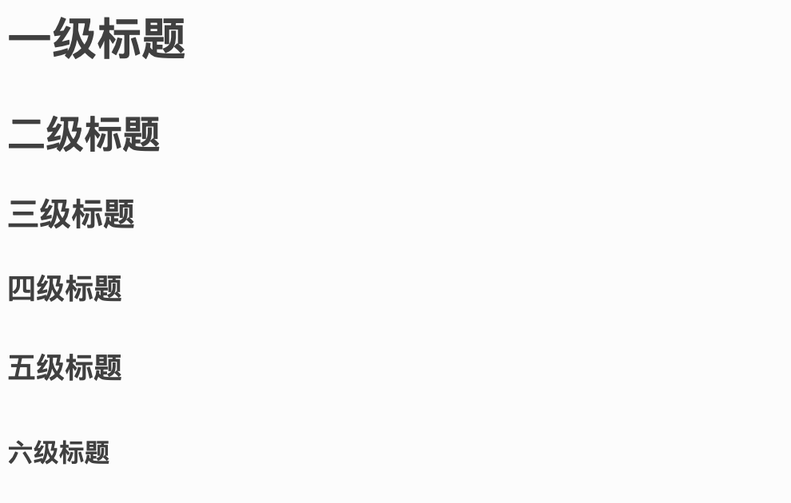

Markdown 语法¶
1. 标题¶
Markdown 中几级标题就是几个#加一个空格加标题文字，示例如下：
# 一级标题
## 二级标题
### 三级标题
#### 四级标题
##### 五级标题
###### 六级标题
效果如下
2. 文字¶
加粗：在需要加粗的文字两边各加上两个*斜体：在需要设置斜体的部分两边各加上一个*斜体且加粗：在文字两边各加上三个*删除线：在文字两边各加上两个~示例如下：
**这是加粗**
*这是斜体*
***这是斜体加粗***
~~这是删除线~~
效果如下：这是加粗 这是斜体 这是斜体加粗 ~~这是删除线~~
5. 图片和超链接¶
图片引用的格式是示例：


超链接的格式是[超链接名](超链接地址 "超链接title")示例：
[sphinx](http://www.sphinx-doc.org/en/master/ "sphinx.org")
[baidu](http://www.baidu.com)
6. 列表¶
无序列表无序列表用-或+或*加空格即可
示例：
- 无序列表1
+ 无序列表2
* 无序列表3
效果如下：
- 无序列表1
- 无序列表2
- 无序列表3
有序列表用数字加.即可表示有序列表示例：
1. 有序列表1
2. 有序列表2
3. 有序列表3
效果如下：
- 有序列表1
- 有序列表2
- 有序列表3
列表嵌套上级列表和下级列表之间加三个空格即可。示例：
- 一级无序列表
- 二级无序列表
- 一级无序列表
1. 二级有序列表
2. 二级有序列表
1. 一级有序列表
- 二级无序列表
2. 一级有序列表
1. 二级有序列表
效果如下：
- 一级无序列表
- 二级无序列表
- 一级无序列表
- 二级有序列表
- 二级有序列表
- 一级有序列表
- 二级无序列表
- 一级有序列表
- 二级有序列表